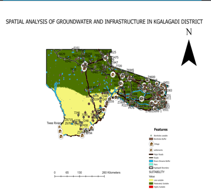
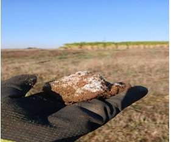
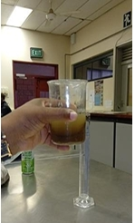
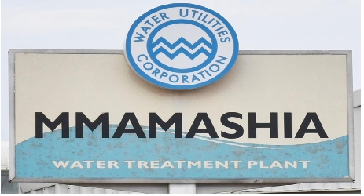
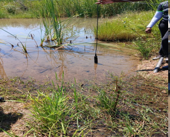
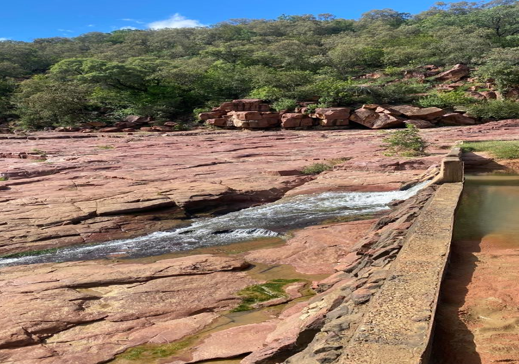

GIS Kgalagadi Borehole Mapping
ArcGIS Pro spatial analysis of borehole sites across the Kgalagadi region.
View ProjectWater Resources and Climate Resilience Enthusiast | Soil and Water Conservation Engineering Student | Diploma in Water and Environmental Engineering | Occupational Health and Safety | Understanding Research Methods (Coursera)
I am Balapolosi Botlhe Morwamang, a dedicated final-year Bachelor of Science in Soil and Water Conservation Engineering student . I hold a diploma in Water and Environmental Engineering from Botswana College of Engineering and Technology (BCET) and a Certificate in Occupational Health and Safety. I am passionate about sustainable water resource management, environmental conservation, climate resilience and communuty development. My goal is to contribute to the sustainable management of water resources and environmental protection while creating innovative engineering solutions that improve communities and support sustainable development.
Bachelor of Science in Soil and Water Conservation Engineering - Botswana University of Agriculture and Natural Resources (BUAN)
Diploma in Water and Environmental Engineering - Botswana College of Engineering and Technology (BCET)
Certificate in Occupational Health and Safety - Construction Industry Trust Fund
Online Certified in Understanding Research Methods - University of London & SOAS University of London

ArcGIS Pro spatial analysis of borehole sites across the Kgalagadi region.
View Project
Assessment of soil salinity patterns in Glen Valley Farms.
View Project
Monitoring and analysis of water quality.
View Project
Design and implementation of a water treatment system.
View Project
Threats to freshwater and wetland systems at global, regional (African) and local (Botswana) scales.
View Project
Focuses on the Kolobeng Weir which is part of the Notwane River catchment system
View ProjectGained hands-on experience across water treatment operations at Gaborone Water Works, including SCADA systems monitoring, chemical dosing processes and water quality testing.
Gained hands-on experience in agricultural and irrigation practices at a commercial farm. Conducted soil salinity testing to assess soil health and suitability for crop production, and assisted with irrigation system inspection.
Gained practical experience in water treatment and distribution processes. Assisted in monitoring water quality by analyzing physical and chemical parameters to ensure compliance with safety standards.
Email: morwamangbotlhe@gmail.com
Number: +267 73236118 / +267 74818612
Linkedin: Balapolosi Botlhe Morwamang
Github: Balapolosi Botlhe Morwamang
Facebook: Botlhe Morwamang